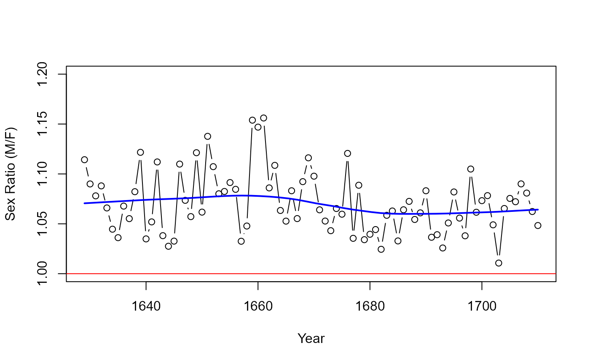
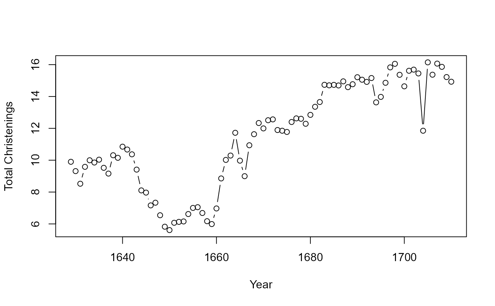

Arbuthnot's data on male and female birth ratios
Arbuthnot.RdJohn Arbuthnot (1710) used these time series data on the ratios of male to female christenings in London from 1629-1710 to carry out the first known significance test, comparing observed data to a null hypothesis. The data for these 81 years showed that in every year there were more male than female christenings.
On the assumption that male and female births were equally likely, he showed that the probability of observing 82 years with more males than females was vanishingly small (\(~ 4.14 x 10^{-25}\)). He used this to argue that a nearly constant birth ratio > 1 could be interpreted to show the guiding hand of a devine being. The data set adds variables of deaths from the plague and total mortality obtained by Campbell and from Creighton (1965).
Usage
data(Arbuthnot)Format
A data frame with 82 observations on the following 7 variables.
Yeara numeric vector, 1629-1710
Malesa numeric vector, number of male christenings
Femalesa numeric vector, number of female christenings
Plaguea numeric vector, number of deaths from plague
Mortalitya numeric vector, total mortality
Ratioa numeric vector, ratio of Males/Females
Totala numeric vector, total christenings in London (000s)
Details
Sandy Zabell (1976) pointed out several errors and inconsistencies in the Arbuthnot data. In particular, the values for 1674 and 1704 are identical, suggesting that the latter were copied erroneously from the former.
Jim Oeppen <joeppen@health.sdu.dk> points out that: "Arbuthnot's data are annual counts of public baptisms, not births. Birth-baptism delay meant that infant deaths could occur before baptism. As male infants are more likely to die than females, the sex ratio at baptism might be expected to be lower than the 'normal' male- female birth ratio of 105:100. These effects were not constant as there were trends in birth-baptism delay, and in early infant mortality. In addition, the English Civil War and Commonwealth period 1642-1660 is thought to have been a period of both under-registration and lower fertility, but it is not clear whether these had sex-specific effects."
Source
Arbuthnot, John (1710). "An argument for Devine Providence, taken from the constant Regularity observ'd in the Births of both Sexes," Philosophical transactions, 27, 186-190. Published in 1711.
References
Campbell, R. B., Arbuthnot and the Human Sex Ratio (2001). Human Biology, 73:4, 605-610.
Creighton, C. (1965). A History of Epidemics in Britain, 2nd edition, vol. 1 and 2. NY: Barnes and Noble.
S. Zabell (1976). Arbuthnot, Heberden, and the Bills of Mortality. Technical Report No. 40, Department of Statistics, University of Chicago.
Examples
data(Arbuthnot)
# plot the sex ratios
with(Arbuthnot, plot(Year,Ratio, type='b', ylim=c(1, 1.20), ylab="Sex Ratio (M/F)"))
abline(h=1, col="red")
# add loess smooth
Arb.smooth <- with(Arbuthnot, loess.smooth(Year,Ratio))
lines(Arb.smooth$x, Arb.smooth$y, col="blue", lwd=2)

# plot the total christenings to observe the anomalie in 1704
with(Arbuthnot, plot(Year,Total, type='b', ylab="Total Christenings"))
